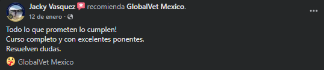
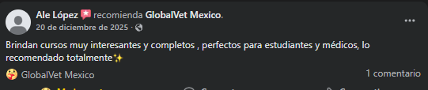
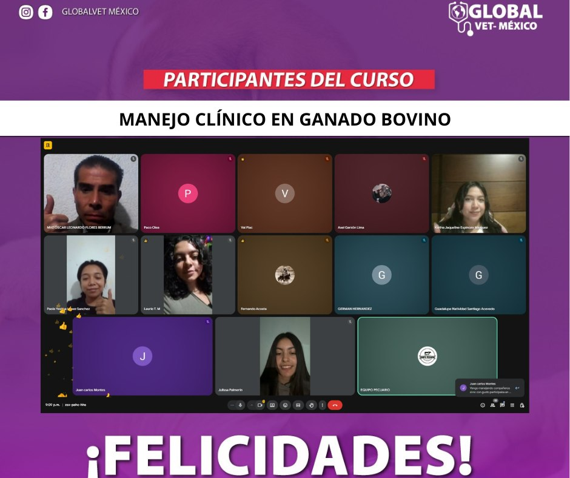

Cursos especializados en medicina veterinaria
Programas de capacitación en áreas clínicas y productivas para fortalecer criterio técnico y actualización profesional.
Ver detalleEn GlobalVet México creemos que el conocimiento es una herramienta clave para transformar la medicina veterinaria. Reunimos cursos, recursos educativos y una comunidad de aprendizaje para fortalecer habilidades clínicas y técnicas.

GlobalVet México es una organización educativa dedicada a la formación, actualización y especialización de profesionales y estudiantes del área veterinaria. A través de programas académicos, cursos especializados y material de estudio, impulsa el conocimiento técnico y práctico en distintas áreas de la medicina veterinaria y producción animal.
Programas y recursos diseñados para actualización constante, aprendizaje práctico y fortalecimiento de la comunidad profesional.
Programas de capacitación en áreas clínicas y productivas para fortalecer criterio técnico y actualización profesional.
Ver detalle
Formación enfocada en actualización técnica, nuevas habilidades y aplicación práctica en el ejercicio profesional.
Ver detalle
Contenido de apoyo académico y práctico para reforzar conocimientos en etapa formativa.
Ver detalleCursos con enfoque clínico, teórico y práctico para responder a distintos perfiles del sector veterinario.

Curso orientado al análisis e interpretación de pruebas bioquímicas en medicina veterinaria.
Ver catálogo
Contenido enfocado en criterios, protocolos y fundamentos quirúrgicos aplicados.
Ver catálogo
Bases terapéuticas para apoyar recuperación funcional y bienestar animal.
Ver catálogo
Herramientas para fortalecer la toma de decisiones en escenarios de práctica diaria.
Ver catálogo
Estrategias para promover manejo responsable y mejorar la experiencia animal.
Ver catálogo
Actualización en principios clínicos y atención integral del paciente veterinario.
Ver catálogoImpulsamos el desarrollo profesional, el bienestar animal y la excelencia en la práctica veterinaria mediante cursos, programas educativos y recursos de aprendizaje.
Buscamos consolidarnos como una plataforma educativa líder en capacitación veterinaria, reconocida por calidad, innovación e impacto positivo.
Capturas reales enviadas por personas que han seguido de cerca las actividades de GlobalVet México.








Solicita información sobre próximos cursos, especializaciones y recursos educativos disponibles.